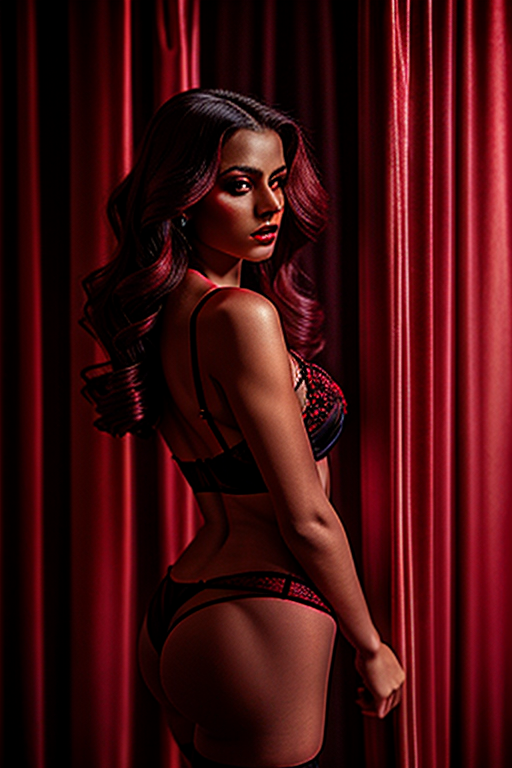
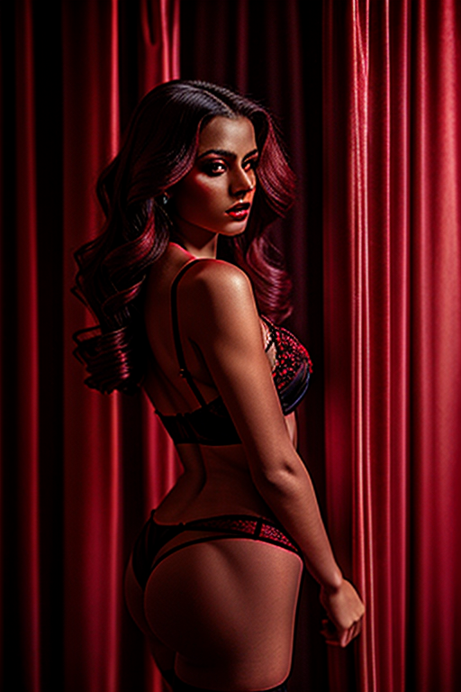

This set explores emotive pose red room portrait through retro aesthetics and romantic tone under overcast. Compositions use wide shot with urban backdrop, keeping focus clear and tidy. Details like streetwear styling and balanced colors make browsing easy.
Browse redroom images. Page 1 of curated redroom-style portrait collection.


 



Here we highlight page1, aiming for clean structure, quick scanning, and useful context. Alt text and headings are optimized to make the content accessible and to provide consistent cues across the site. Subtle differences in wording help avoid duplication across similar pages. Internal navigation leads to related items with comparable tone or composition. This reduces bounce and supports exploration within the same theme. Alt text and headings are optimized to make the content accessible and to provide consistent cues across the site. Subtle differences in wording help avoid duplication across similar pages. For more context, browse related entries linked nearby; each page offers a slightly different angle to limit overlap.